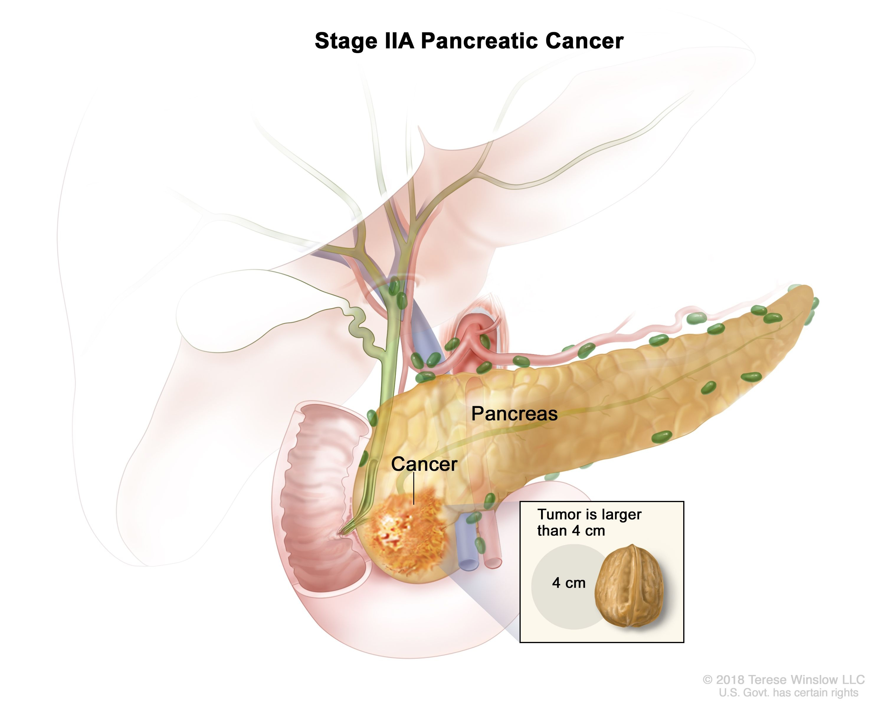

Pancreatic cancer

SYMPTOMS:
Signs and symptoms of pancreatic cancer often don't occur until the disease is advanced. They may include:
- Abdominal pain that radiates to your back
-
Loss of appetite or unintended weight loss
-
Yellowing of your skin and the whites of your eyes (jaundice)
-
Light-colored stools
-
Dark-colored urine
-
Itchy skin
-
New diagnosis of diabetes or existing diabetes that's becoming more difficult to control
-
Blood clots
-
Fatigue
CAUSES
It's not clear what causes pancreatic cancer. Doctors have identified some factors that may increase the risk of this type of cancer, including smoking and having certain inherited gene mutations.
DIAGNOSIS:
If your doctor suspects pancreatic cancer, he or she may have you undergo one or more of the following tests:
- Imaging tests that create pictures of your internal organs. These tests help your doctors visualize your internal organs, including the pancreas. Techniques used to diagnose pancreatic cancer include ultrasound, computerized tomography (CT) scans, magnetic resonance imaging (MRI) and, sometimes, positron emission tomography (PET) scans.
-
Using a scope to create ultrasound pictures of your pancreas. An endoscopic ultrasound (EUS) uses an ultrasound device to make images of your pancreas from inside your abdomen. The device is passed through a thin, flexible tube (endoscope) down your esophagus and into your stomach in order to obtain the images.
-
Removing a tissue sample for testing (biopsy). A biopsy is a procedure to remove a small sample of tissue for examination under a microscope. Most often the tissue is collected during EUS by passing special tools through the endoscope. Less often, a sample of tissue is collected from the pancreas by inserting a needle through your skin and into your pancreas (fine-needle aspiration).
-
Blood test. Your doctor may test your blood for specific proteins (tumor markers) shed by pancreatic cancer cells. One tumor marker test used in pancreatic cancer is called CA19-9. It may be helpful in understanding how the cancer responds to treatment. But the test isn't always reliable because some people with pancreatic cancer don't have elevated CA19-9 levels, making the test less helpful.
TREATMENT
- Treatment for pancreatic cancer depends on the stage and location of the cancer as well as on your overall health and personal preferences. For most people, the first goal of pancreatic cancer treatment is to eliminate the cancer, when possible. When that isn't an option, the focus may be on improving your quality of life and limiting the cancer from growing or causing more harm.
-
Treatment may include surgery, radiation, chemotherapy or a combination of these. When pancreatic cancer is advanced and these treatments aren't likely to offer a benefit, your doctor will focus on symptom relief (palliative care) to keep you as comfortable as possible for as long as possible.